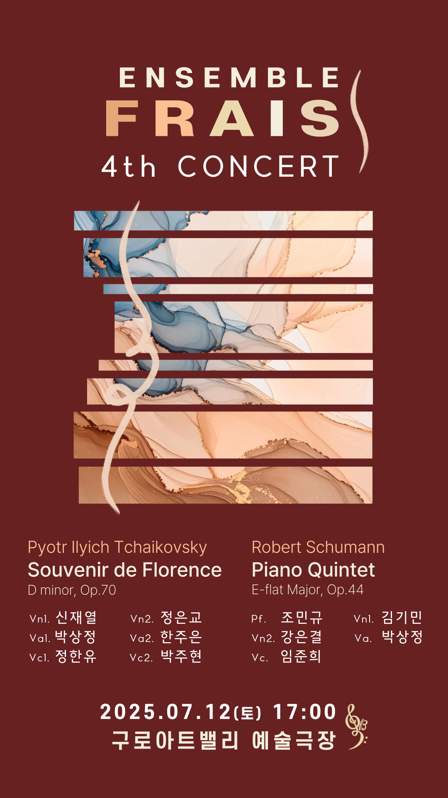
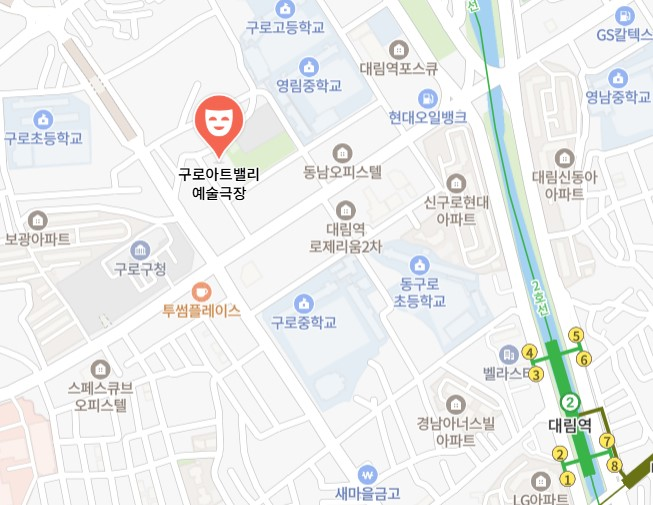

공지사항
예매 및 티켓 수령 안내
- 티켓은 공연 시작 30분 전부터 티켓 부스에서 수령 가능합니다.
공연 관람 안내
- 공연 중 사전 협의되지 않은 사진, 영상 촬영, 음원 녹음은 자제해 주세요.
- ※ 단, 커튼콜 및 앵콜 시에는 가능합니다.
- 원활한 진행을 위해 가급적 공연 시작 10분 전에는 공연장에 입장해 주시기 바랍니다.
- 공연 시작 이후에는 지정된 시간 외 입장이 제한되며, 본인 좌석이 아닌 다른 좌석으로 안내될 수 있습니다.
- 객석 내 뚜껑이 있는 생수를 제외한 음료 및 음식물, 꽃다발 반입이 금지되어 있습니다.
- 유아의 경우, 만 4세부터 동반입장 가능하오니 이 점 참고해 주시기 바랍니다.
주차 안내
- 공연 당일에는 주변 교통이 혼잡하고 공영주차장 주차 공간이 협소하므로 가급적 대중교통을 이용해주시기 바랍니다.
- 구로문화재단 지하 주차장은 일반 주차가 불가하오니 반드시 구로아트밸리 공영주차장을 이용하여 주시기 바랍니다.
- 공연관객 주차요금이 30% 할인 적용됩니다. (공영주차장 주차요금과 중복할인 불가)
- 기본료 1시간 1,800원 / 공연관객 30% 할인 / 경차, 저공해, 다둥이(서울시발급기준) 50% 감면 / 장애인, 국가유공자 80% 감면
- 공연장 2층 물품보관소에 당일 공연티켓을 제시하면 주차요금 사전웹할인 등록이 가능합니다.
찾아오시는 길

2호선, 7호선 대림역 4번 출구에서 도보 약 10분 (약 831m)
앙상블 FRAIS 후원하러 가기
 앙상블 FRAIS YouTube
앙상블 FRAIS YouTube